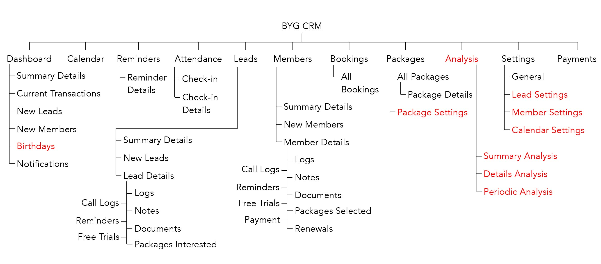

BYG CRM Mobile App
UI / UX Redesign, Group Project with Saurav Nag
BYG (Book Your Game) is a company that deals with marketing, CRM, websites
and apps for gyms in mulitple cities in India. The initial focus of the company was on getting
the CRM product up and running resulting in not much design being put into it. The goal of the
project was to improve the UX and redo the UI of the product to create a better experience.
Tools: Illustrator, Photoshop
Information Architecture
We wanted the app to be a simpler version of the desktop app that included only features that the user would check frequently or on the go. Red content was removed in the mobile app. Refactoring and rearrangement of content was also needed to make the mobile version a more clean and seamless experience.
Final UI
The following are some of the main screens of the final user interface